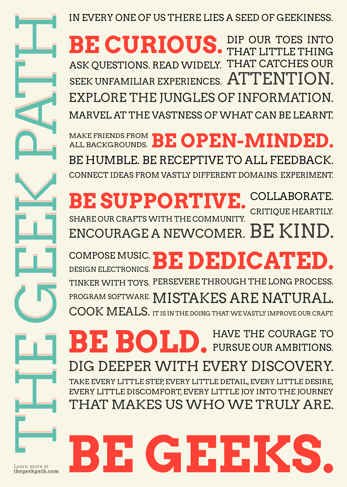

The
Geek
Path
A community manifesto

In every one of us there lies a seed of geekiness.
Be curious.
Dip our toes into that little thing that catches our attention.
Ask questions. Read widely.
Seek unfamiliar experiences. Explore the jungles of information.
Marvel at the vastness of what can be learnt.
Be open-minded.
Make friends from all backgrounds. Be humble.
Be receptive to all feedback.
Connect ideas from vastly different domains.
Experiment.
Be supportive.
Collaborate. Critique heartily. Be kind.
Encourage a newcomer.
Share our crafts with the community.
Be dedicated.
Compose music. Design electronics. Tinker with toys. Program software. Cook meals.
Persevere through the long process.
Mistakes are natural.
It is in the doing that we vastly improve our craft.
Be bold.
Have the courage to pursue our ambitions. Dig deeper with every discovery.
Take every little step, every little detail, every little desire, every little discomfort, every little joy into the journey that makes us who we truly are.
Be geeks
💞 Codified by the grassroots geek community of engineers, designers and makers of Singapore and beyond 💞
- Adeline Seah
- Adnan Jalaludin
- Agatha Lee
- Aizat Omar
- Alyssa Quek
- Ambrose Chua
- Angeline Tan
- Aqilah Misuary
- Audrey Lim
- Cathy Ooi
- Dona Banerjee
- Ei Wai
- Fazli Mansor
- Guo Xiang Tan
- Hakim Hamid
- Harish Pillay
- Harish Venkat
- Huijing Chen
- Hwee Xian Tan
- Jia Hean
- Jian Wei
- Jinny Wong
- Joey Cheong
- Juan Miguel Jimeno
- Jurvis Tan
- Kiruthika Curic
- Leon Lim
- Martin Brochhaus
- Melissa Tan
- Min Ong
- Natalie Tay
- Navjot Pawera
- Pui Kwan Lee
- Rebeka Dune
- Roland Turner
- Saad Chinoy
- Sahil Bajaj
- Sam Hon
- Sonia Saravanan
- Theng Lee
- Vina Rianti
- Vishnu Prem
- Wei Lu
- Weiman Kow
- Winnie Lim
Collated and coordinated by Mic, Chee Aun and Sayanee